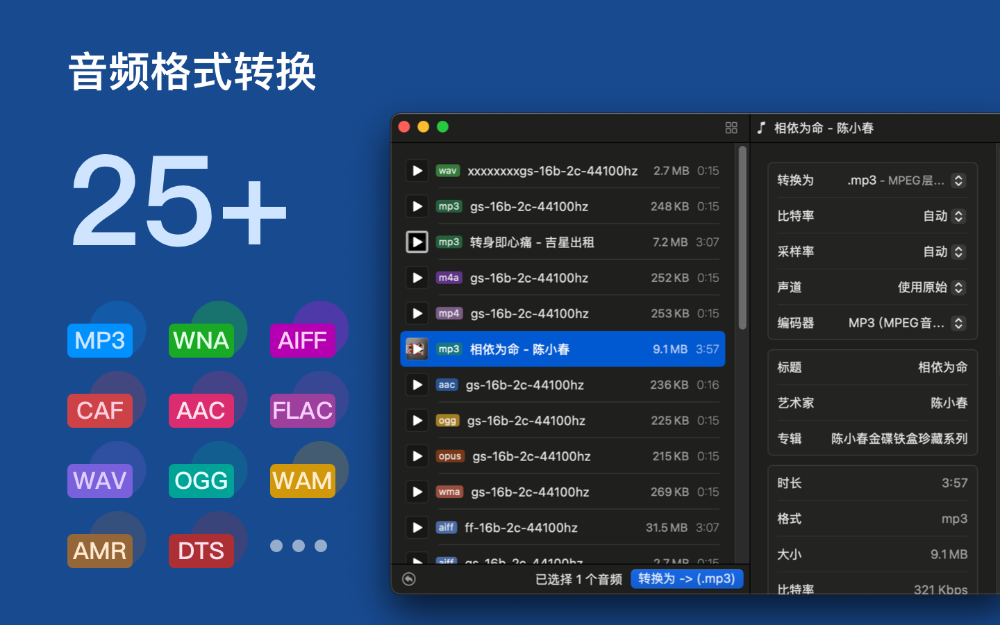
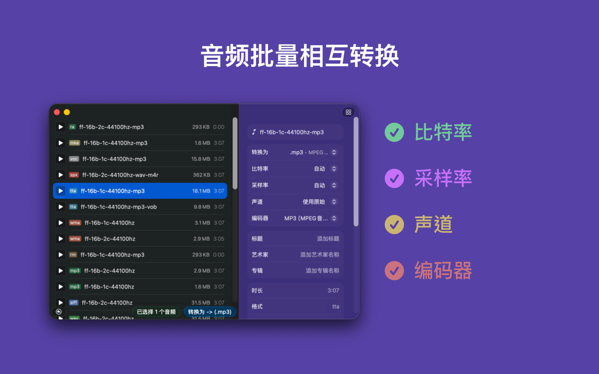
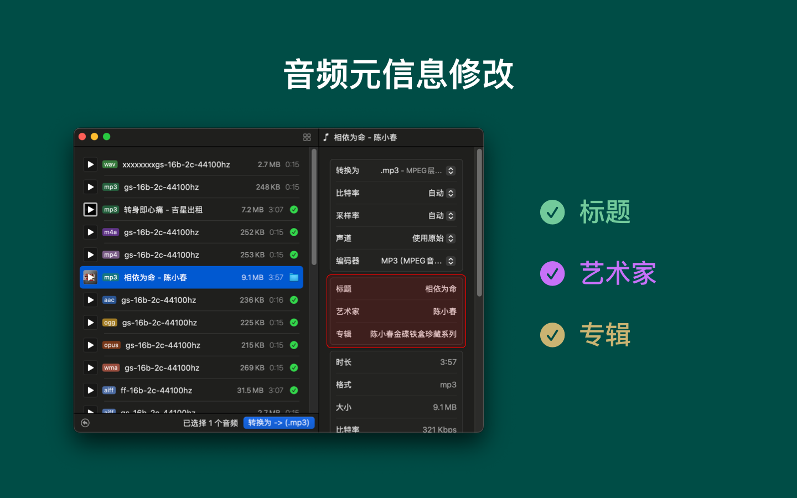

  
一键将所有音频文件转换为 MP3 格式！支持多种音频格式之间的相互转换，操作简单，转换便捷。只需将文件拖入应用窗口，调整设置后点击按钮，即可轻松完成转换！
支持转换的音频格式包括：.aac、.ac3、.aifc、.aiff、.aif、.amr、.au、.caf、.dts、.eac3、.flac、.m4a、.mp2、.mp3、.mp4、.mka、.mov、.ogg、.opus、.ra、.rm、.spx、.tta、.voc、.vob、.wav、.webm、.wma、w64、m4r
我们的应用程序支持几乎所有设备常见的音频格式，转换音乐与编辑元信息从未如此简单！